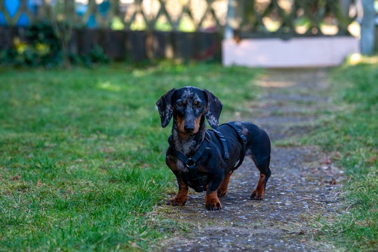

A tacskó az egyik legismertebb és legkülönlegesebb megjelenésű kutyafajta. Hosszú teste, rövid lábai és élénk tekintete azonnal felismerhetővé teszik. Bár mérete kicsi, személyisége hatalmas: bátor, kíváncsi és rendkívül energikus kutya. Eredetileg vadászatra tenyésztették, főként föld alatti vadak - például borzok - felkutatására, ezért kiváló szaglással és nagy kitartással rendelkezik.
A tacskó nagyon ragaszkodó és hűséges társ. Erősen kötődik gazdájához, szereti, ha a család középpontjában lehet. Játékos természetű, szeret labdázni, sétálni és felfedezni a környezetét. Intelligens, de néha makacs, ezért a nevelése türelmet és következetességet igényel.
Kis mérete miatt lakásban is ideálisan tartható, azonban napi mozgásra szüksége van, hogy egészséges és kiegyensúlyozott maradjon. Rövid szőre könnyen ápolható, de létezik hosszú- és drótszőrű változat is. Megfelelő gondoskodás mellett hosszú életű, általában 12-15 évig él.
A tacskó tökéletes választás azok számára, akik egy vidám, szeretetteljes és különleges megjelenésű kutyát keresnek, aki igazi családtaggá válik.